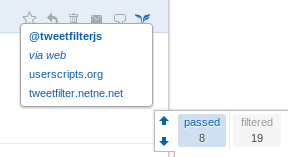
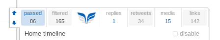

Tweetfilter
for browsers
Tweetfilter is a browser extension for twitter.com, supporting Firefox 3.6+, Chrome 10+, Opera 11+, Safari 5+ and IE 9+. For best experience please always use the latest stable release of your favorite browser.
Tweetfilter allows you to customize many aspects of the Twitter website, declutter your dashboard, hide features and add new ones, for better transparency and usability, just by setting the options.
With the powerful Tweet filter you can filter (hide or search) Tweets of certain kind, from certain sources or with specific content. The filter makes an exception for your conversations and can be disabled and inverted at any time making sure you don't miss something important to you. This gives you the possibility to remove the noise from your timeline or ignore topics you are not interested in without inversive actions like unfollowing your friends, but also to quickly find Tweets with specific content in your timelines.
Tweetfilter was your idea
Thanks to many (direct or indirect) suggestions you and others posted on Twitter over time, Tweetfilter became more than just a timeline cleaner. In particular many #newtwitter and #twitter/@twitter tagged critics and feature requests from the public timeline were (and are still!) taken into account during development, making Tweetfilter a truly useful extension to the twitter.com application.
Basic features
- filter independently all retweets (including classic RT-format), media, replies, Tweets with links from timelines with tweets
- custom filters for keywords, full-word (exact) match, username, mentions, hashtags, real name, source (via) with live updated match count
- shortened link expansion
- highlight Tweets mentioning you
- customize timeline layout, add via information, new menu options
- customize dashboard and aspects of the twitter.com layout gaining more space and remove distractions
- show friend status in Tweets (who you follow, who follows you)
- sound and message notification on new mentions and/or direct messages
- ... please see section Options for full list of options.
New most user requested features in Tweetfilter 2.0
- Filter works on all timelines with Tweets, like favorites, user profile or lists
- Export and import settings and filters via bookmarklet
- Quote Tweets ("classic RT")
- Direct message feature
- Alert and sound notification on new messages and mentions
- Filter exclusion list
- Hide main Tweet box to gain more vertical space (press "N" for new tweet or click the top bar icon)
- Disable timeline cache solving lags between page switches on older/slower browsers
- Regular expression filters
Other new features in Tweetfilter 2.0
- Tweetfilter 2.0 is completely refactored and runs faster and smoother with a index based filter
- New collapsible widget with scrollable filter list, browser independent layout adapting to your color settings
- quickly filter all retweets (including classic RT-format), media, replies, Tweets with links on top of the widget
- Better retweets: show source and friend status of retweeting user.
- New exclusive filter mode: you can middle/ctrl-click filters to combine and quickly search for Tweets matching them
- Highlight excluded tweets
- Friend status now also shows who follows you and who you are following, useful outside home timeline
- New name filter: filter Tweets matching certain bio realnames
- Many more fixes and improvements, adapted to latest twitter.com updates
Usage
Tweetfilter reorganizes and adds new menu options to the Tweets in your timelines. By clicking the Tweetfilter symbol at the bottom right of a tweet a drop-down menu will appear showing you the user, contained mentions, hashtags and links (if any).
Tweetfilter dropdown You can select from the list what you want to filter. Newly added filters take effect immediately and will add matching Tweets to "Filtered" (hide from timeline). On the top of the Tweetfilter widget you see the count of Tweets which passed all filters ("passed") and those which match at least one filter ("filtered"). You can click "filtered" and "passed" to switch between the two (invert the filter).
- Click the filter in the dropdown holding shift to add it to Exclusions - no Tweets matching this filter will be added to "Filtered" Tweets (also see also see section Exclusions).
- Click the filter holding Ctrl to immediately search your timeline (also see exclusive filter)
With the four quick filters on the right of the Tweetfilter logo you can instantly show (white background) or hide (gray background) all replies, retweets, media and tweets containing links from the current timeline.
The Tweetfilter symbol shows when Tweetfilter is currently waiting for the website or processing operations by flapping it's wings. If it stands still, Tweetfilter is idle and not doing anything. Clicking the TF-symbol minimizes the widget (or restores it's maximized state, if minimized).
Tweetfilter quick filters
You can type simple text filters (keywords/phrases) in the "Add to Tweetfilter"-input on the widget, pressing enter will create a new filter entry in the "Filters" list showing you the count of matches and all Tweets containing this keyword/phrase (also as part of another word or contained in the text of links) are immediately moved to the "filtered"-group. This way you can also filter #hashtags, @mentions and links. To copy/edit a filter click it in the Filters/Exclusions list while holding shift.
Special filters
- To hide/search all Tweets coming from a certain user, either select it directly from
the "add to filter"-dropdown menu at the bottom of the tweet, or add
from:@username(with or without @) to the filter. Filters which match usernames appear bold in the filter. If you want to exclude a user from the filter, prefix it with - (hyphen):-from:@buddy- the filter will be added to the "exclusions" list, no Tweets coming from this user will be added to the "filtered" Tweets. - to filter Tweets by Tweet's source (via) add
via:partofclientto the filter (will appear italic). For examplevia:webwill filter all Tweets from sources (via) containing "web". - to filter all Tweets by posting user's real name add
by:partofnameto the filter (where "partofname" is the keyword/phrase you want to search within the user's real name) - to force any filter to full word match (exact phrase or word surrounded by stop chars like space), wrap the
keyword/phrase part in double quotes: the filter
"hat"will not match a Tweet which just contains what, hattrick or hate (like the simple text filterhatwithout quotes would). You can combine exact search with source, name or simple (keyword, hashtags, mentions, linktext) filters:via:"web",by:"Bob","#exacthashtag", ... - User filters are always "exact" (username must fully match the posting user). Use Regular Filters (see Advanced Usage) to circumvent this.
Exclusions
If you want to exclude anything from the filter process, write it in
the Add to Tweetfilter input and press Shift+Enter.
Alternatively, prefix your filter with - (hyphen).
For example: -love will
exclude all Tweets containing love from all other
filters - the filter will be added to the "exclusions" list, no Tweets matching this
filter will be added to the "filtered" Tweets
This works for all filter types: -@mention, -by:nameofuser, -"exact
phrase", -from:@username, etc.
You can also add a filter from the Tweetfilter dropdown menu to the Exclusions by holding shift while clicking on a filter from the list.
Edge cases
- If it happens you want to filter a term which Tweetfilter sees as special filter,
prefix it with a ' (single quote):
'-keyword. If you enter anything in the filter prefixed with single quote, it will always be a simple text filter even if it has a special syntax. - if you want to filter anything beginning with a single quote, prefix it with another
one:
''neverhappens'will filter anything containing 'neverhappens' (with the quotes).
Exclusive/Search filter
You can click every filter in Filters, Exclusions and on the right of the Tweetfilter logo with the middle mouse button or while holding Ctrl to exclusively show only Tweets matching this filters. The filter will be underlined (or dark colored in case of the top filters). Clicking another filter this way will add it to the exclusive filter set. Middle/Ctrl-clicking it another time will remove it from the set. Scroll down (or click the Tweetfilter down arrow) to load more tweets, only those matching the filters will appear. Press passed or filtered to exit exclusive filter mode.
Another way to instantly search for a term/phrase is to write it in the "Add to Tweetfilter" input and pressing Ctrl+Enter. This will add the new filter and set it as exclusive filter immediately. You can add more terms the same way, they will be added to the exclusive filter set.
Notes
- All filters are case insensitive.
- Tweets mentioning you will not be added to "filtered" unless you uncheck don't hide mentioning me in the Filter-options (except when in @Mentions or in exclusive mode).
- Your own Tweets will not be filtered unless you uncheck the option skip my posts in the "Filter" options (except when in timelines showing only your Tweets, like in "Your Tweets" or "Your Tweets, retweeted", or in exclusive mode)
- Simple text filters also match text contained in @mentions (appearing as
@username-link). If setting a filter
tweetfilter, a Tweet mentioning @tweetfilterjs will be filtered. Use exact search ("tweetfilter") or exclusions (-@tweetfilterjs) to refine the filter process. - Text filters also scan the text within expanded links (the url). It can occur that Tweets will be moved to filtered or back to passed (in case of exclusion) as soon as the Twitter-API expands a link in the Tweet containing a filter keyword. The option expand links doesn't need to be active for this to work, links are expanded in the background by the twitter.com application itself, not Tweetfilter. This way Tweetfilter can match links pointing to certain domains even if they appear shortened.
Advanced usage
If you know how to write Regular Expressions, Tweetfilter 2.0 offers you the possibility to transform any filter to a regular expression:
from:@/^[ab]/will filter all usernames beginning with "A", "a", "B" or "b" (the "i" flag is added to the expression)via:noisy sources=/123$/will filter all Tweets via sources ending with 123, the filter title will be "noisy sources".- you can also add regular filters to the exclusion list prefixing them with - (hyphen).
- The short (but also less comprehensive) syntax still works
(and even has been extended)
@@is equivalent tofrom:@:@is equivalent tovia:?@is equivalent toby:
@@buddies=/^(user1|user2|user3)$/filter all tweets (and retweets) from user1,user2 and user3 and name the filter "buddies".?@"Bob"filter all tweets from users which have the exact word "Bob" in their bio name
Options
Filter
- don't hide mentioning me will avoid tweets containg an @mention of your username to be hidden from your timeline, even if matching other filters in use. This option is disabled in @Mentions.
- don't hide my posts will always show tweets written by you, even if matching other active filters you set. This option is disabled in timelines which show only your own Tweets.
- add selection to filter enables you to quickly add select text within your Tweets by clicking the Tweet again afterwards. If you want do deselect, click left or right outside the timeline. Use the mousewheel/Ctrl-click (middle click) to add the selection to the exclusion list.
- highlight mentioning me adds some color to Tweets containing an @Mention of you (disabled and inactive in @Mentions).
- highlight my tweets adds color to Tweets written by you.
- highlight excluded adds color gradient to Tweets which match a filter from the Exclusions-tab.
Timeline
- show friend status shows with an icon near the name of tweeting (and retweeting) user in Tweets and friend lists who follows you (white star), who you follow (gray star), and who is a mutual friend (yellow star), refreshed automatically after half an hour.
- show line breaks shows the line breaks in Tweets (like most desktop clients do)
- show Tweet's local time displays the original time of the tweet (posting user's timezone)
- expand new tweets immediately shows new tweets instead of new new tweets bar
- expand links expands shortened urls in Tweets
- small links shrinks link size in Tweets saving vertical space (especially when "expand links" is enabled)
Dashboard
- fixed dashboard keeps the dashboard in position while scrolling down.
- compact activities hides your last tweet, followings and followers and replaces it with a compact dashboard component showing you extended overview. If this option is activated, the information on the dashboard component is updated every two minutes.
- hide who to follow hides the "Who To Follow" and the "Similar To" box.
- hide trends hides the "Trends"-box
- hide advertising hides the advertising-box
- hide invite friends prevents the "invite friends" prompt from showing randomly
- minify menu shows only essential menu links
- hide last tweet removes "Your Tweets" from your dashboard (Home only)
- expand last tweet shows the full text of your last Tweet in your dashboard, instead of cutting it off after the first line
Global
- auto hide top bar shows the top bar only when the mouse is over it or when the search-field is focused
- hide question hides "Whats happening?"
- hide main tweet box hides the tweet box on top of the timeline. You can still press "N" for new Tweet.
- alert new dm displays a message through Twitters notification system when you have new messages
- sound on new dm plays a sound on new messages
- alert new mentions displays a message through Twitters notification system when someone mentioned you (@Mentions)
- sound on new mentions plays a sound when you have new @Mentions
- default search to "all" forces all searches defaulting to "All Tweets" instead of "Top Tweets". This option affects the top black bar search, clicks on hashtags in timeline and the selection of saved searches.
- disable copy link shortener suppresses the t.co link shortener when copying a Tweet's text in your timeline. This is especially useful together with the option expand links when you want to copy the real link instead of a t.co-link.
More
- disable timeline cache causes a reload of the timeline on switch. On older/slower browser versions like Firefox 3.6.x this solves lags when switching back to a stream which has many loaded (and cached) Tweets.
- fill page with Tweets causes loading more tweets if less than 10 visible Tweets are in timeline. This option is disabled per default, use it wisely, it will continue loading Tweets and making API calls if less Tweets are visible. Please note that API calls are hourly limited by Twitter. If you hit the API limit, don't panic - your Twitter will very soon deliver new Tweets again - but make sure you know why this happened to prevent it in the future.
- expand link targets makes links in timeline point directly to the expanded link target instead of the t.co-link. This works independently from the option expand links.
- enable twee+ support expands tweeplus.com shortened Tweets in the details pane (click the Tweet).
- export Tweetfilter settings by dragging the "Tweetfilter settings" bookmarklet to your favorites bar (or, alternatively right click > add to bookmarks or similar). After you click it (while on twitter.com with Tweetfilter running), your settings from the moment of adding the bookmarklet will be reloaded. This triggers one page refresh. Your current settings will be overwritten, export them to another bookmarklet before reloading the settings, if you still need them.
Tweetfilter Updates
2.1.1 2011-11-03
- Twitter Timeline Update: Twitter removed the expandable timeline and reverted to details pane layout.
Apparently the didn't like it enough to make it standard yet. If you still have the expandable timeline you're fine with previous version (2.1.0) and don't need to update.
- Readded Options show via in tweets, show full timestamp
- Updated Tweetfilter layout, icons and positioning
- Updated enable Twee+ support for long tweets.
- Some small fixes in Tweetfilter links menu
2.1.0 2011-10-30
- Twitter Timeline Update: Twitter removed the details pane and added more functionality to the timeline.
- Removed options show via in tweets, show full timestamp - these are now standard. Tweetfilter adds the retweeter's via in Retweets.
- Updated Tweetfilter layout, icons and positioning
- Fixed empty timelines (issue #30, issue #29)
- Updated enable Twee+ support for long tweets - Tweets now expands after click.
- Added option treat classic RT like new RT which allows you to exclude or include "RT @user"-style tweets from the Retweets-Filter.
- Optimized speed of link expander and user filter
2.0.9
- Improved expand links performance and cache handling. Expanded links are now cached on the timeline instead of the Tweetfilter object.
- Fixed filter matches not being removed from filter index after deletion. This caused some special filters still taking effect after deletion (required F5).
- Updated show friend status to retry once after one failed load, fixed "failed loading friends" error message.
- Fixed expand link targets (Beta), option did nothing after 2.0.7 link expander update.
- Updated stream navigation on widget (the up/down arrows), added smooth scrolling instead of jumping.
- Updated top filters on widget: added line through styling to captions on active top filters (replies, retweets, media, links) to make it more evident Tweetfilter is hiding those Tweets.
- Added "About" Tab with current version and direct install / update link
2.0.8 (Bugfix release)
- Fixed show friend status causing API rate limit hit.
2.0.7
- Fixed empty timeline after first load related to latest Twitter updates
- Fixed Firefox 3.6.x compatibility (please update such old Firefox, if possible - 3.6.x is awfully slow compared to current releases)
- Reorganized and simplified options and filter tabs
- Added timeline selection for filters ("for this timeline" / "for all timelines") allowing you to add filters which
only take effect current timeline and filters which are active in all timelines (like it was in versions before 2.0.7).
You can, if you need to, convert your global filters to local filters by editing (shift+click) and readding them with Enter while "for this timeline" is selected. - Improved expand links: now also expands links in dashboard panes, better handling of Twitter's link expander bugs
- Improved messages/mention notification to work along multiple tabs notifying only once
- New Beta Section: this contains the options which are known to behave inconsistently. Please use the Beta options for testing purposes only until they can be fixed.
2.0.6
- Fixed show friend status not updating after first load. Reduced refresh time to 15 minutes for users with less than 5000 friends. Now also works on "you both follow" streams.
- Added new option show full timestamp (Timeline) which replaces the time ago display in Tweets with the full date and time.
- Added new option enable rich text editor (More) which unlocks the new Tweet editor when writing new Tweets (Twitter beta feature, disabled in Opera where it doesn't work yet).
- Fixed highlight mentioning me and highlight my tweets to work when filter is disabled
- Updated show retweeted count, sorts the retweeting users by their followers count and displays the total count of users the Tweet reached through retweets.
- Fixed compact activities not refreshing immediately when switching back to a previously loaded page.
- Updated twee+ support to recognize in_reply_to-links
- Improved option show Tweet's local time, balloon help now also shows the approximate difference between your and posting user's time.
2.0.5
- Greasemonkey users: The recommended Firefox userscript engine for Tweetfilter is now Scriptish as replacement for Greasemonkey. Scriptish is under active development and offers some nice additions, the most noticeable is an integrated update notification. If you'd like Firefox to notify you when a new version of Tweetfilter is available, get Scriptish now.
- Updated widget: better contrast on top filters, disabling filter hides all filter related controls, widget adapts visible options to user/tweet stream and hides on pages / streams where Tweetfilter can't operate (like Messages or single Tweet view)
- Added new option show retweeted count, which shows you the count of retweeters at the bottom of Tweets (from the time the tweet reached you). Clicking the link will show up to 100 profile images/links of the retweeters (which is way more than you see in Tweet's details pane).
- Added new option lock scroll position (issue 6, issue 13) which keeps the current visible Tweets in place when (automatically) expanding new Tweets instead of scrolling down
- Reintroduced expand last tweet (dashboard) together with it's new counter part hide last tweet (options exclude one each other)
- Added new option disable copy link shortener to suppress the t.co link shortener when copying a Tweet's text. This is especially useful together with the option expand links when you want to copy the real link instead of shortening it again.
- Added enable twee+ support: tweeplus.com is the only long Tweet service I've seen so far that does not store your
long Tweets and just posts a link to their page, but takes a smarter approach and delivers the whole text in form of a literal shortened link containing all your text,
by keeping @mentions in the Tweet.
This makes it possible to expand the shortened long Tweets without any call to a service (no crossdomain requests).
Tweetfilter expands twee+ Tweets in the details pane (click the Tweet). You can filter twee+ tweets with keywords contained in the expanded twee+ text. Tweetfilter's link expander collapses links to tweeplus.com in your timeline, avoiding to break the layout. - Updated show friend status: better data compression, raised limit to 1.000.000 friends. Loading (many) friends now resumes after F5 reload instead of starting over again, if fetch was not completed
- Updated option small links (moved to Layout-tab): really long (expanded) links are limited to 3 Tweet lines, hovering the link with the mouse will show it entirely.
- Updated Mention / Message-Notification:
- Message notification is now synchronized with the internal message manager, used to fire earlier than the Tweets arrived - F5 is not needed anymore.
- Fixed issue with Messages appearing multiple times in stream
- Notification box hides as soon as you switch to the according page (Mentions or Messages)
- Updated option compact activities, now also shows up on profile pages, bringing you back the Favorites count in the dashboard.
- Updated expand links, is now faster
- Fixed add selection to filter: selected text now only adds selection to filter if you click the same Tweet's text again
- Fixed show line breaks to show multiple line breaks
- Fixed show Tweet's local time, is now more accurate (issue 11), the possible daylight saving discrepancy remains)
2.0.4
- Fixed show friend status (Timeline) to sostain up to 600.000 friends (issue #8)
- Added option default search to "all" (More) which forces all searches defaulting to "All Tweets" instead of "Top Tweets". This works in the black bar search, when clicking hashtags in timeline and in saved searches.
- Fixed filter icons in Tweets disappearing after favorite or retweet action (issue #5)
- Updated option expanded link targets (More) to fix another case of broken expanded links, caused by a Twitter bug in link resolver (read more about in issue #4)
- Other minor updates, fixes and optimizations for better stability
2.0.3 (Hotfix, 11-07-29)
- Fixed minimize widget not working after update
2.0.2 (11-07-29)
- Fixed default options not loading after cleaning local storage or after first install
- Fixed widget overlapping dark background in media gallery
- Fixed skip my posts (Filter), option was broken
- Added experimental option show local time (Timeline), which displays the original local time a tweet was posted. This is displayed only if the user has set it's time zone.
- Added option highlight my tweets (Filter) which adds a gradient to your own tweets
- Added option hide promoted tweets (Filter) that tells Tweetfilter to always hide sponsored Tweets
- Added option hide promoted content (Dashboard) to hide promoted trends and who to follow
- Fixed expand links occasionally chopping off the #hash from links, workaround for Twitter bug
- Added option expand link target (More) which leads your click directly to the expanded link target instead of the t.co-link. This works independently from the option expand links
2.0.1 (11-07-27)
- Fixed overlapping with dashboard pane when Tweet details with much content are opened. Tweetfilter now resizes the open dashboard pane in realtime when the widget is maximized
- Updated option compact activities, new dashboard component similar to the profile view
- Option highlight mentioning me now works while filter is disabled
- Fixed Tweetfilter not going back to idle state in realtime searches with fast flowing results
- Removed dashboard option expand last tweet, that option was never requested, dashboard space is precious
- Added option hide invite friends which prevents the big random "invite friends" message to show up
- Fixed links to @Mentions and Messages in the Tweetfilter notification messages
- Fixed friend status not showing up when switching stream before friend status was fully loaded
- Small optimization of filter process resulting in a noticeable speed increase (♥ ECMA 5)
- Fixed quick filter links not showing it's disabled state when in "Search with links"
Bugs, your ideas and feature suggestions
Found a bug? Great, let's kill it. Have an idea on how to improve Tweetfilter? Even better! You can post potential bugs, ideas and/or feature suggestions in the Github Tweetfilter Issues Tracker, thanks! If you are a developer and fixed a bug, please file a pull request.
Thanks for using Tweetfilter!